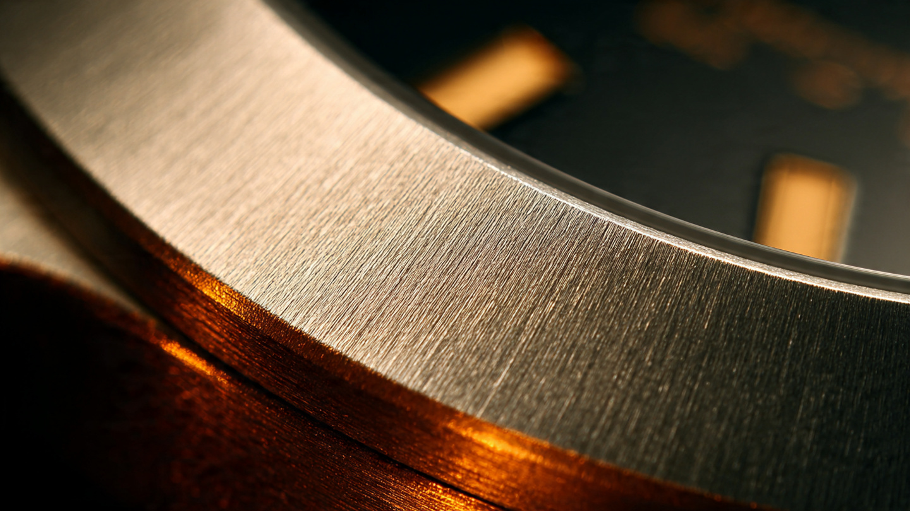

Five Problems, Five Patents, Zero Compromise: How Sinn Spezialuhren Engineered the Failure Out of a Wristwatch

Lothar Schmidt is an engineer who used to build watch cases at IWC, a man whose career trajectory from Schaffhausen to Frankfurt traces the boundary between Swiss finishing tradition and German engineering pragmatism. Between 1990 and 1993, he ran the technical production development for the newly re-established A. Lange and Söhne. When he acquired Sinn Spezialuhren on September 1, 1994, the Frankfurt company had a dozen employees, a catalog of functional pilot chronographs, and the credibility that comes from having your watches worn in space, but what it lacked was a technology portfolio. Schmidt, who understood materials better than marketing, spent the next three decades building one, and the result is a stack of five proprietary systems so interconnected, so aggressively practical, that the company now more closely resembles a research lab that happens to sell watches than a watch company that dabbles in research.
This is a company that hardened a case to 1,200 Vickers, then figured out how to dry the air inside it with copper sulfate, then eliminated the oil from the one part of the movement most sensitive to oil degradation, then filled a different watch entirely with oil to make it readable at 12,000 meters. No coherent marketing narrative holds all five technologies together, but the coherence is engineering logic, and it runs through every patent filing: each technology eliminates a specific failure mode at its root cause rather than managing its symptoms downstream.
German Submarine Steel
Standard watch cases are made from 316L stainless steel. So ubiquitous in the industry it barely registers as a choice. It resists corrosion adequately, machines reasonably well, and has a Vickers hardness of approximately 200 to 220. For most wrists in most environments, 316L is fine. Adequate. Serviceable. For a professional diving instrument, that is merely a starting point. Sinn abandoned it decades ago. Completely.
Sinn's U-series watches are built from 1.3964 austenitic steel, a nitrogen-alloyed steel specified for the pressure hulls of German Navy submarines. Werkstoff 1.3964 specifies a particular composition: chromium, nickel, molybdenum, manganese, and dissolved nitrogen arranged in a face-centered cubic crystal structure that remains non-magnetic at all temperatures and resists pitting corrosion in chloride-rich environments significantly better than 316L, with yield strength exceeding conventional watch steels throughout its cross-section, not merely at the surface.
Using it required solving problems that no other watch manufacturer has chosen to confront. Nobody volunteers for this. Submarine steel is substantially harder to machine than 316L. Cutting tools wear faster, cycle times increase, and tolerances that are routine in softer alloys become expensive in 1.3964. Sinn's subsidiary, Sächsische Uhrentechnologie GmbH Glashütte, founded by Lothar Schmidt and Ronald Boldt in 1999, exists partly because this material demanded dedicated manufacturing expertise close to the Saxon watchmaking cluster.
In 2005, Sinn had its submarine steel diving watches independently tested and certified by Germanischer Lloyd in Hamburg, now DNV GL, under the European EN205 diving device standard and the EN14143 standard. No other watch manufacturer has submitted to that certification, not Rolex with its Deep-Sea lineage, not Omega with its Seamaster heritage, not Blancpain with its Fifty Fathoms pedigree. Whether the others consider it unnecessary, too expensive to pursue, or simply inconvenient given that the certification process requires submitting production watches to a classification society more accustomed to evaluating submarine pressure hulls than wrist-worn instruments is an open question that none of them has chosen to answer publicly. The certificate belongs to Sinn alone.
Occasionally, Sinn produces limited editions from actual decommissioned submarine hulls. Limited editions U15, U16, and U18, released in 2016, each used steel from specific vessels with documented nautical mile histories, including U18, whose hull had logged 192,842 nautical miles across 38 years of maritime service. These are sentimental in the best possible way, because the provenance is measured not in celebrity ownership or auction history but in nautical miles logged, depth charges survived, and years of continuous service beneath the North Sea and the Baltic, which is the kind of provenance that a watch collector who actually cares about engineering would choose over any number of Hollywood wrist shots.
TEGIMENT: Not a Coating
Hardening the bulk material helps. But when the problem is surface scratches from daily wear, the surface is where the solution belongs. TEGIMENT technology, introduced in 2003 with the 756 Duochronograph at Baselworld, hardens the outer layer of the watch case without adding anything to it. Nothing added. Nothing applied. From the Latin tegimentum, meaning protective covering, the name is technically accurate and slightly poetic by German engineering standards.
Sinn keeps the process proprietary, but the result is measurable: a surface hardness of approximately 1,200 Vickers, compared to the 200 to 220 Vickers of unmodified stainless steel, which is not a small improvement but a factor of roughly five and a half. For reference, window glass measures around 500 Vickers, and hardened tool steel sits in the range of 600 to 900. A Tegimented Sinn case is harder than many industrial cutting surfaces. Think about that.
Critically, TEGIMENT is not a coating, and the distinction matters because PVD coatings, DLC films, and ceramic overlays all share a fundamental weakness: they are thin layers of hard material bonded to soft substrates. Under point loads, the soft steel beneath deforms while the rigid film above does not, creating a stress concentration at the interface. Cracks, chips, delamination. Watchmakers call this the eggshell effect, and anyone who has owned a PVD-coated watch for more than a year, worn it while doing yard work or brushing against a concrete wall or simply setting it down on a granite countertop, has probably seen the telltale half-moon chip that reveals the soft steel beneath the supposedly protective surface.
TEGIMENT eliminates the eggshell problem by making the substrate itself hard. When Sinn then applies an additional TiAlCN hard coating, which is a titanium aluminum carbon nitride film reaching approximately 2,000 Vickers, the coating sits on a surface of comparable rigidity. Point loads distribute through a continuous hardness gradient rather than concentrating at a soft-hard boundary. A Fratello long-term test of multiple Sinn watches over several years confirmed this. One reviewer's U1000S, which combined Tegimented submarine steel with TiAlCN PVD, survived years of daily wear without a single visible mark. A metal door latch left traces of itself on the case, not the other way around. The latch lost.
Ar-Dehumidifying: Copper Sulfate and Controlled Atmosphere
Every mechanical watch contains lubricating oil, and every case seal leaks. Not dramatically, not immediately, but water vapor in atmospheric air migrates through rubber and silicone gaskets at molecular scale regardless of water resistance ratings. Temperature fluctuations cause micro-condensation inside the case, and liquid water accelerates electrochemical corrosion of movement components and degrades lubricant viscosity until, over three to five years, accuracy drifts. Over eight to ten, the movement needs service. This is the accepted lifecycle of every mechanical watch from every manufacturer. Nobody except Sinn found it acceptable to challenge.
Ar-Dehumidifying technology, introduced in 1998 in the 203 Ti Ar diving watch, attacks the problem with a three-component system so thoroughly that the resulting watch exists in what is effectively a controlled laboratory atmosphere, sealed against the ambient air that every other watch manufacturer simply accepts as an unavoidable part of the operating environment. First: after final assembly, the case interior is flushed with a dry protective gas, displacing atmospheric air and its moisture content, establishing near-anhydrous starting conditions. Second: EDR seals, Sinn's acronym for extreme diffusion reduction, are gasket materials engineered to reduce water vapor permeation to approximately 25 percent of conventional seal materials, so humidity still penetrates but far more slowly. Third, and most visibly clever: a drying capsule filled with copper sulfate sits inside the case and chemically absorbs whatever moisture does penetrate.
Copper sulfate is hygroscopic, and in its anhydrous form it is white. As it absorbs water, it hydrates and shifts progressively from pale blue to deep blue. This color change is visible through a small window in certain models, giving the wearer a direct readout of the capsule's saturation state. When the capsule is saturated, it is time for a service. Not because the movement has degraded, but because the drying capacity is approaching its limit. Elegant as a feedback loop: a chemical indicator requiring no electronics, no batteries, producing no ambiguity.
Sinn backs watches equipped with Ar-Dehumidifying technology with a three-year warranty on fogging and moisture-related accuracy issues. That extended warranty is not a marketing gesture. It reflects genuine confidence that the oil will not degrade within that window because the water that causes degradation has been structurally excluded from the system.
DIAPAL: The Oil That Isn't There
Ar-Dehumidifying slows degradation. DIAPAL asks a more radical question. Why lubricate at all?
In a Swiss lever escapement, the component that converts the mainspring's stored energy into regulated oscillation of the balance wheel, oil serves a single critical purpose: reducing friction between the pallet stones and the escape wheel teeth. Traditionally, the pallet stones are synthetic ruby and the escape wheel is steel. Without lubrication, the ruby-steel interface generates enough friction to drop the balance amplitude below functional thresholds within three months. With standard lubrication, the oil ages, thickens, and creates drag that reduces amplitude measurably within three to five years. Of all the oiled points in a movement, the escapement degrades first and affects timekeeping most severely.
Sinn began research on lubricant-free escapement materials in 1995 with the original concept of using diamond pallets instead of ruby ones, hence the name DIAPAL (diamond pallets). Diamond against steel offered lower friction than ruby against steel, and early tests showed the combination could function without oil. But the oscillation amplitude remained unacceptable for production use. Research continued, and Sinn filed its first DIAPAL patents in 2000 and introduced the technology to series production in the 756 DIAPAL. Production versions do not necessarily use diamond in its original crystalline form. Instead, the name DIAPAL now refers to the broader family of nanotechnological material pairings that Sinn has developed and validated for frictionless, lubricant-free operation in the escapement. Sinn does not disclose the specific materials or surface treatments in current production, which is consistent with the general Sinn approach of publishing performance specifications while keeping process details proprietary.
In practice, a DIAPAL-equipped watch maintains stable amplitude and accuracy at the escapement long after a conventionally oiled movement has begun to deteriorate. Combined with Ar-Dehumidifying technology, which protects the remaining oiled points in the gear train and balance pivots, the DIAPAL system effectively removes the single largest contributor to long-term accuracy loss from the equation entirely.
Sinn offers a five-year warranty on watches equipped with DIAPAL, two years longer than the Ar-Dehumidifying standard and roughly double what most Swiss manufacturers offer on movements that still rely entirely on conventional lubrication at every friction point. Again, the warranty extension is diagnostic, because Sinn knows how long the technology lasts under normal conditions because it has tested it for three decades.
HYDRO: The Watch Full of Oil
DIAPAL removes oil from the escapement. HYDRO fills the entire watch case with it. Opposite instincts. Same company. If that seems contradictory, you are paying attention, and the resolution is that these are different technologies solving different problems on different watch lines, never combined in the same piece.
First used in 1996 in the 403 HYDRO, the concept is disarmingly straightforward. Remove all air from the watch case, fill the void with a clear fluid whose refractive index closely matches that of the sapphire crystal, whether silicone oil or fluorinated oil, and seal it. Deceptively simple.
Three things happen immediately, and the first is that total internal reflection vanishes. In a conventional watch underwater, the air-glass interface at the sapphire crystal creates a mirror effect at oblique viewing angles. Dials disappear, hands become invisible, and a diver tilts their wrist to find nothing. In a HYDRO watch, the fluid fills the gap between the crystal and the dial, creating a continuous optical medium from the wearer's eye through the crystal to the hands and indices, making legibility absolute at every angle.
Second, condensation becomes physically impossible, because fogging occurs when water vapor in trapped air condenses on a cold crystal surface, and without air there can be no vapor and no fog. A HYDRO watch moved from a warm room to ice water shows nothing on the crystal except the time.
Third, the case becomes effectively incompressible, because fluids do not compress under hydrostatic pressure the way air does. A conventional watch case must be structurally rigid enough to resist water pressure because any deformation of the air-filled interior would crack the crystal or breach the seals. A HYDRO case allows external pressure to equalize through a flexible membrane caseback that deforms inward as depth increases, accommodating thermal volume changes of approximately 10 percent across the operating temperature range of negative 20 to positive 60 degrees Celsius. Sinn's UX, the model issued to Germany's GSG 9 counter-terrorism unit for maritime operations, has been certified for case integrity at 12,000 meters, deeper than the Mariana Trench. Its quartz movement is rated to 5,000 meters, which is the number printed on the dial, because even Sinn draws the line at claiming a wristwatch works at pressures no human will ever experience.
Here is the mechanical trade-off: a balance wheel oscillating at 28,800 vibrations per hour cannot swing through viscous fluid. Every HYDRO watch uses a quartz movement, and Sinn makes no apology for this. HYDRO solves the readability and pressure problems, but it does not solve them while also being mechanical. If you want mechanical, buy a U1; if you want to read your watch at 300 meters through oil-clear sapphire while your buddy checks his decompression stop on a conventional dial he can barely see, buy a UX, because both exist and both are honest about what they do and do not do.
The Sixth Technology Nobody Mentions
Magnetic field protection predates all five of the headline technologies and arguably enables them. Since 1994, Sinn has offered a closed soft-magnetic inner shell consisting of the dial, a movement retaining ring, and a caseback made from magnetically permeable material. This shell shields the movement up to 100 millitesla, or 80,000 amperes per meter, substantially exceeding the DIN 8309 standard for anti-magnetic watches. Every smartphone, laptop charger, tablet case, and handbag magnetic clasp in the world generates fields that can magnetize a Nivarox balance spring and ruin timekeeping accuracy. Sinn assumes you carry all of these things and designs accordingly.
And then there is the temperature resistance package, developed in 1998 alongside Ar-Dehumidifying. By combining the argon atmosphere with a proprietary synthetic oil, Sinn Special Oil 66-228, and optimizing dimensional tolerances for differential thermal expansion, certain models operate reliably from negative 45 to positive 80 degrees Celsius. The 857 UTC, worn by Alan Eustace during his stratospheric parachute jump from 41,419 meters in October 2014, experienced temperatures of negative 77 degrees Celsius, ambient pressures approaching vacuum, and a freefall velocity of 1,322.9 kilometers per hour, breaking the sound barrier, and the watch performed without incident. Both watch and suit are now at the Smithsonian National Air and Space Museum. Sinn did not issue a press release. That silence says everything.
Frankfurt, Not Geneva
When Helmut Sinn founded the company in 1961, he was a pilot. Luftwaffe. Blind-flying instructor selling navigation chronographs direct to professionals without a retail network, without advertising, without pretension. In 1985, astronaut Reinhard Furrer wore a Sinn 140 S during the Spacelab D1 mission, proving that an automatic mechanical chronograph could function in zero gravity. In 1992, Klaus-Dietrich Flade took a 142 S to Mir. In 1993, a Sinn flew on the Space Shuttle Columbia during mission D2, completing 160 orbits and 6.7 million kilometers. Sinn did not sponsor any of these astronauts, and every watch was chosen because it worked.
Helmut Sinn also helped launch Bell and Ross. Bell and Ross's early watches, including the Space series and the Type Demineur, were made by Sinn. When the companies separated, Sinn kept the engineering. Bell and Ross kept the brand positioning, which is as clean an illustration of priorities as the watch industry has produced.
Under Lothar Schmidt, the workforce grew from a dozen employees to over 160 at the Frankfurt-Sossenheim headquarters completed in 2017, with an additional 45 at SUG Glashütte. Sinn still sells direct in Germany, though it has added authorized retail partners internationally. Growth has been measured. Deliberate. Scaling manufacturing capability rather than marketing spend.
Before IWC, before A. Lange, he was a mechanical engineer who understood that case technology, not movement decoration, was the frontier where wristwatch performance could be most meaningfully improved. Movements are outsourced across the industry through ETA, Sellita, and Miyota, so everyone has access to the same calibers. Differentiation through dial finishing, hand polishing, and rotor engraving is aesthetic, not functional. Schmidt chose to differentiate through the envelope that protects the movement from the physical world. Scratch it. Fog it. Magnetize it. Scratch it, fog it, magnetize it, crush it with water pressure, let its oil age. Each of these is a failure mode that exists in every competitor's product, and Sinn built a technology to eliminate each one.
Germany's GSG 9 uses Sinn UX watches for maritime counter-terrorism operations, the Kommando Spezialkräfte der Marine, the German Navy's commando frogman force, uses Sinn diving watches, and the Zentrale Unterstützungsgruppe Zoll, the German customs special unit, uses Sinn mission timers, and none of these are ceremonial partnerships or paid endorsements. Military procurement evaluates instruments against operational requirements documents that specify thermal range, pressure tolerance, magnetic immunity, and impact survival in language that does not mention dial finishing or caseback engraving, and Sinn's technology stack meets every standard on those documents.
What It Means
Most watch companies, when confronted with a physical limitation of the wristwatch as a platform, solve problems aesthetically. A scratch-prone case gets a ceramic bezel insert, a foggy crystal gets a hydrophobic coating, and a magnetized movement gets a silicon hairspring. Each solution addresses one symptom with one material substitution, and when you step back and look at the whole picture, the underlying architecture remains the same 316L case with conventional seals, standard lubrication, and an implicit acceptance that the watch will need servicing every five to seven years because the environment inside the case is fundamentally hostile to the oils that keep the movement running, which is the exact assumption Sinn decided to reject.
Sinn's approach is different because it is systematic. Submarine steel, TEGIMENT, Ar-Dehumidifying, DIAPAL, and HYDRO do not share a material or a process. What they share is a methodology: identify the root cause of a failure mode, develop a technology that eliminates it at the source, and integrate that technology into the production line at scale. Five problems solved five ways, with no hand-waving. No asterisks. No caveats. Prices range from approximately 1,500 euros for an entry-level 556 to 5,500 euros for a fully equipped UX with submarine steel, TEGIMENT, and HYDRO. For that money, you do not get a Geneva stripe. You get an engineering argument, backed by Germanischer Lloyd certification and space mission flight heritage, that the watch will still be working accurately when you have forgotten why you bought it.
Lothar Schmidt has been running Sinn for 32 years. He is not, as far as anyone can tell, interested in being famous. He built a subsidiary in Glashütte to make cases from submarine steel, developed five proprietary technologies, certified his diving watches to standards nobody else has attempted, and put his product on the wrists of astronauts and special forces operators who chose it without being asked. Sinn watches cost less than a Tudor Black Bay, outperform most watches at five times their price on every functional metric that a materials scientist would care about, and come with warranty terms that reflect genuine confidence rather than marketing obligation. That is an uncomfortable sentence for the luxury industry, and it is the entire point of Sinn Spezialuhren.
Sources
- Sinn Spezialuhren official technology pages: TEGIMENT, Ar-Dehumidifying, DIAPAL, HYDRO, Magnetic Field Protection (sinn.de/en/sinn-technologies/).
- SwissWatches Magazine, "Sinn Tool Watches: A Visit to Germany's Avant-Garde Watchmaker," 2024, factory tour and comprehensive technology overview.
- Europa Star, "Sinn, a German success story," profile of Lothar Schmidt and 25 years of company leadership.
- Fratello Watches, "Long Term Test Report: Tegimented Sinn Watches," multi-year wear evaluation of U1000S, 856 S UTC, 756 S UTC, and 757.
- Fratello Watches, "New: Sinn U15, U16, And U18 Divers Made Of Submarine Steel," 2016 limited editions from decommissioned submarine hulls.
- WatchGecko, "Why the Sinn Hydro Technology Remains the Gold Standard of Dive Watch Innovations," ISO 6425 compliance and oil-filled case physics.
- Hodinkee, "Dispatches: Run Silent, Run Deep, Diving With The Sinn U1 Professional," field testing of Tegimented submarine steel diving watch.
- Wikipedia, "Sinn (watchmaker)," company history, space mission chronology, and Alan Eustace stratospheric jump record.
- Sinn Spezialuhren, SUG Manufacture page, founding of Sächsische Uhrentechnologie GmbH Glashütte in 1999.
- Smithsonian National Air and Space Museum, Sinn 857 UTC chronograph and Paragon StratEx suit display entry.